Generalizing Polygonal Synthesis to Arbitrary Shapes, Morphing,
and Three-Dimensional Polyhedra
Each example demonstrates the oscillator driven by a fixed polygon shape at a constant fundamental frequency. The spectral character reflects the rotational symmetry of the shape: an n-sided regular polygon emphasises harmonic partials at multiples of nf0, while irregular and concave polygons break this symmetry, introducing additional spectral components.
Three equal sides and angles. 3-fold rotational symmetry concentrates energy at harmonics 3m ± 1.
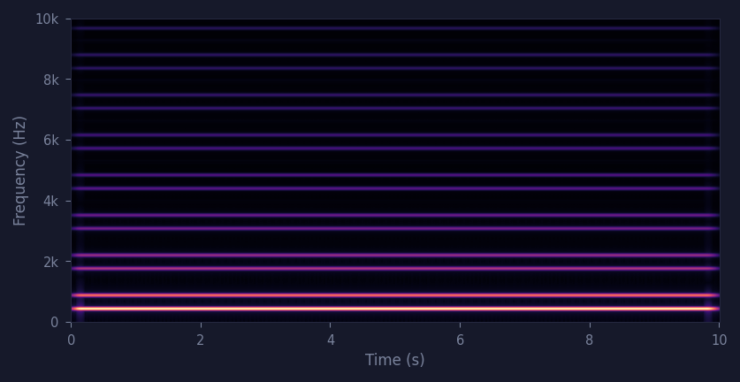
Three vertices with unequal side lengths. The broken symmetry destroys the spectral regularity of the equilateral case, introducing additional harmonic components and yielding a timbre with a richer, less periodic spectral envelope.
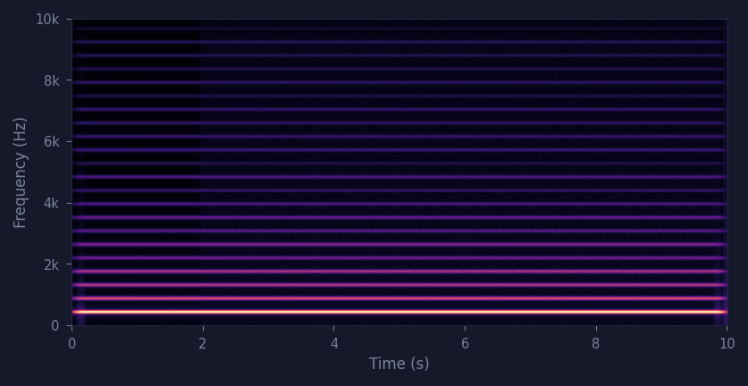
Four equal sides. 4-fold symmetry places spectral energy at harmonics 4m ± 1.
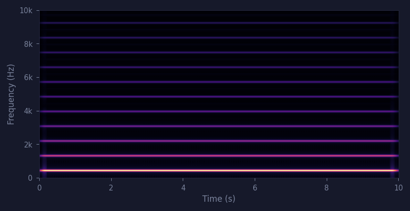
Five equal sides. 5-fold symmetry shifts spectral emphasis to harmonics 5m ± 1.
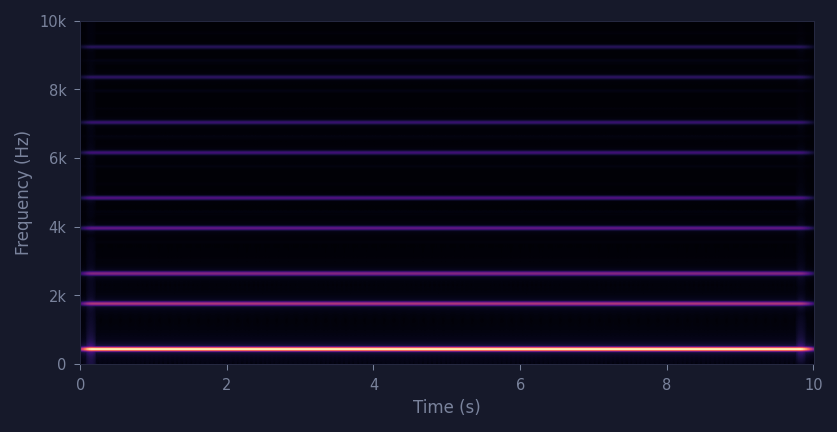
Six equal sides. 6-fold symmetry places spectral energy at harmonics 6m ± 1: {1, 5, 7, 11, 13, …}f0. As the symmetry order M increases, the harmonic lattice becomes progressively sparser — harmonics present at lower M are suppressed — and the waveform converges toward a sinusoid.
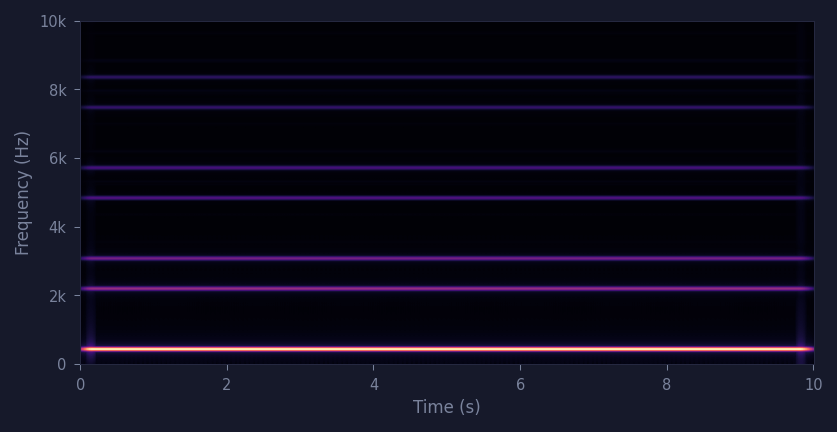
Seven equal sides. 7-fold symmetry places energy at harmonics 7m ± 1.
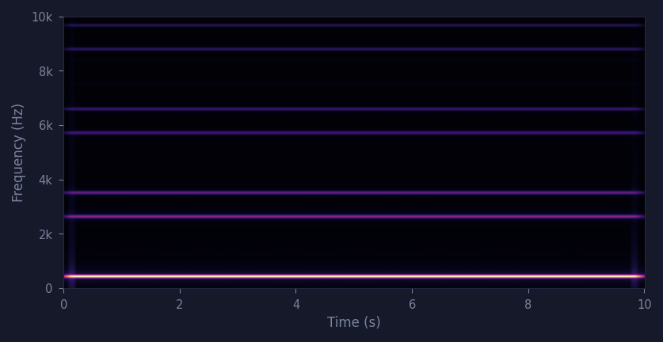
Eight equal sides. 8-fold symmetry places harmonic energy at 8m ± 1: {1, 7, 9, 15, 17, …}f0.
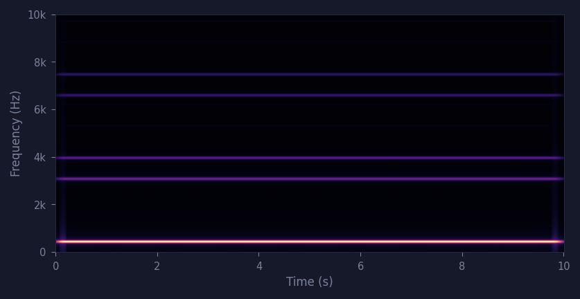
H(5,2) = {(5m ± 2)f0}. A self-intersecting star traversed exactly as drawn: the oscillator follows the supplied vertex sequence along its self-crossing path.
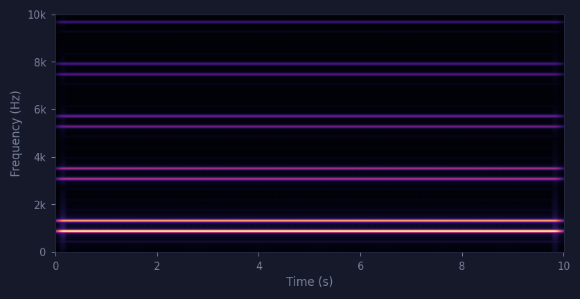
Five-pointed star defined with 10 explicit vertices (alternating convex tips and concave indentations). The shape has 5-fold rotational symmetry (M = 5), so spectral energy is confined to the same harmonic lattice H(5) = {(5m ± 1)f0} as the regular pentagon — confirmed in Fig. 3 of the paper. The vertex count and depth of the concavities control the relative amplitudes within that lattice, concentrating energy toward the upper harmonics and producing the characteristically bright, cutting timbre of star polygons.
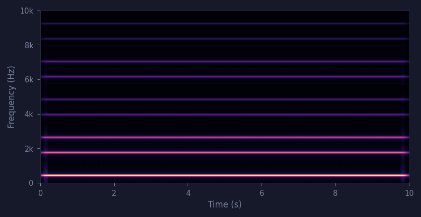
Real-time morphing between two arbitrary polygon shapes. When source and target differ in vertex count, the algorithm inserts sleeping vertices (Section 4.2) to equalize cardinality, then interpolates vertex positions linearly. Each example sweeps the morphing parameter continuously from 0 (source shape) to 1 (target shape) over the full duration of the audio.
3-to-4 vertex interpolation. Both shapes are convex, so angular correspondence is used: the triangle is expanded to 4 vertices by duplicating the vertex whose angular position is nearest to the square's fourth corner. The sleeping duplicate initially coincides with its source and migrates smoothly to its target during the morph. Spectral energy transitions continuously from the triangle's harmonic lattice H(3) to the square's H(4); harmonics exclusive to either endpoint fade or emerge while the fundamental stays fixed at f0.
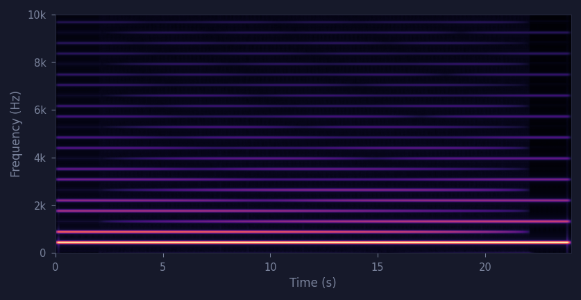
4-to-5 vertex interpolation. Both shapes are convex; the square is expanded to 5 vertices via angular correspondence, duplicating the vertex angularly nearest to the pentagon's fifth corner. The spectral transition moves from the square's odd-harmonic lattice H(4) = {1, 3, 5, 7, …}f0 to the pentagon's H(5) = {1, 4, 6, 9, 11, …}f0.
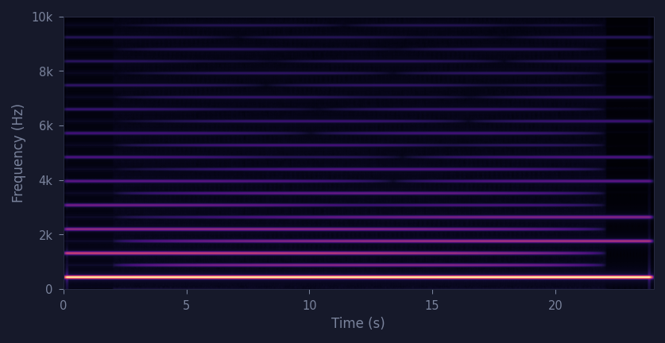
5-to-6 vertex interpolation. Both shapes are convex; the pentagon is expanded to 6 vertices via angular correspondence. The spectral transition moves from H(5) = {1, 4, 6, 9, 11, …}f0 to H(6) = {1, 5, 7, 11, 13, …}f0: the lattice shifts rather than densifies, with harmonics at positions 4 and 9 fading as those at 5 and 13 emerge. The result is a smooth timbral navigation across adjacent symmetry orders.
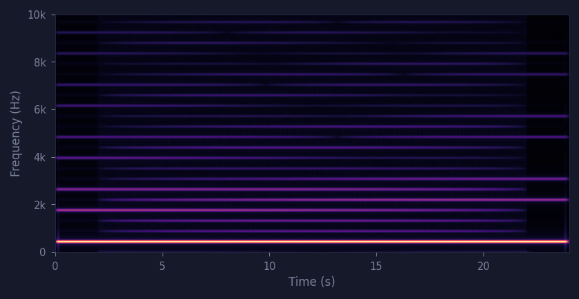
Morphing from a convex triangle to a concave star polygon. Because at least one shape is non-convex, both are expanded with the perimeter-midpoint strategy (Section 4.2.1): sleeping vertices are inserted at edge midpoints and separate as the morph proceeds. The timbral evolution includes a rapid spectral enrichment as concavity develops from midpoints.
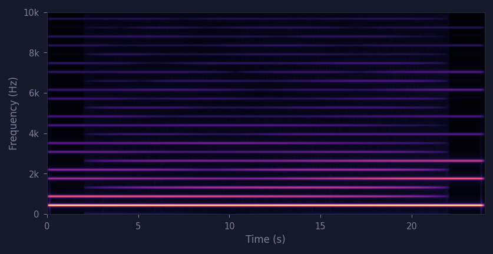
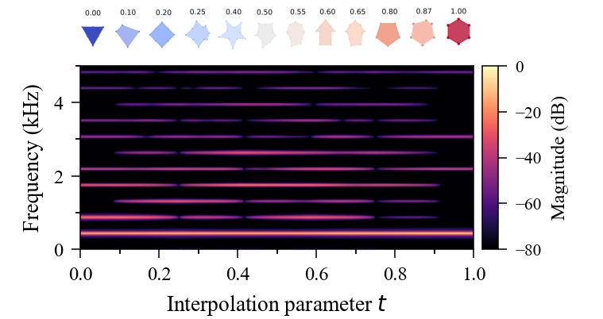
Morphing between two non-convex star shapes with different vertex counts. The self-intersecting star is detected and classified non-convex, so both shapes use the perimeter-midpoint expansion (Section 4.2): sleeping vertices are inserted at edge midpoints — never at the self-crossing points — and the drawn vertex order is preserved on both sides.
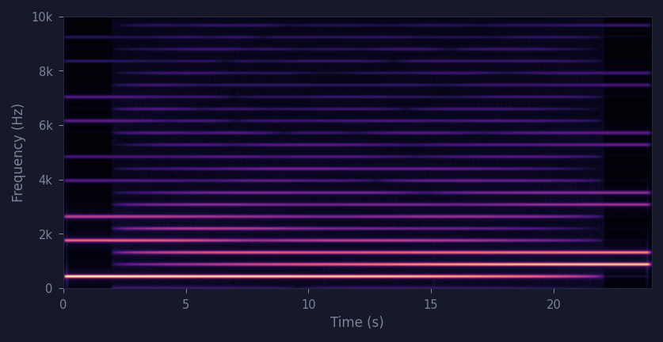
Morphing between two convex polygons with different rotational symmetry orders: the equilateral triangle has M=3, the rectangle M=2. Because the harmonic lattice is fixed by M alone, the two endpoints occupy different active sets — H(3)={3m±1}f₀ = {1,2,4,5,7,8,…} versus H(2)={odd}f₀ = {1,3,5,7,…}. The triangle's even partials (2f₀, 4f₀, …) — present in H(3) but forbidden in H(2) — fade out as the shape straightens, exactly the same even-harmonic decay seen in EX-10. The rectangle's destination lattice H(2) and the square's H(4) are identical — both equal {odd}f₀, since 4m±1 already covers every odd integer.
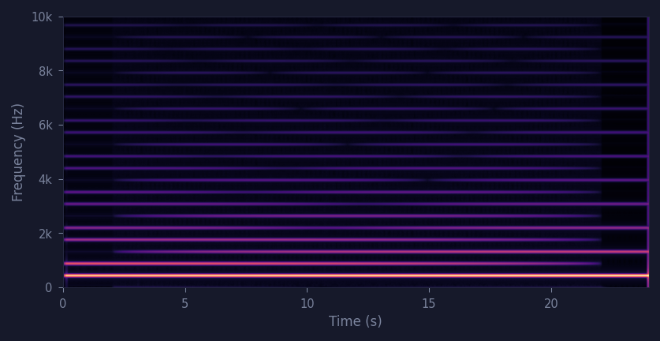
The edge-curvature parameter (κ) bows each edge of a polygon inward or outward without changing the vertex count. Below, the same regular octagon (8 vertices, f0 = 500 Hz) is rendered at three curvature settings. Because the 8-fold rotational symmetry is preserved, the harmonic skeleton is identical in all three cases — energy appears only at the 8m ± 1 partials (1, 7, 9, 15, 17…). What changes is the relative magnitude of the upper harmonics, with the fundamental taken as reference: bowing the edges inward (concave, κ > 0) raises them by ~12 dB for a brighter, sharper tone; bowing them outward (κ < 0) suppresses them, approaching a pure sine as the octagon rounds toward a circle. This is a direct, controlled illustration of how convex and concave shapes differ timbrally at a fixed vertex count.
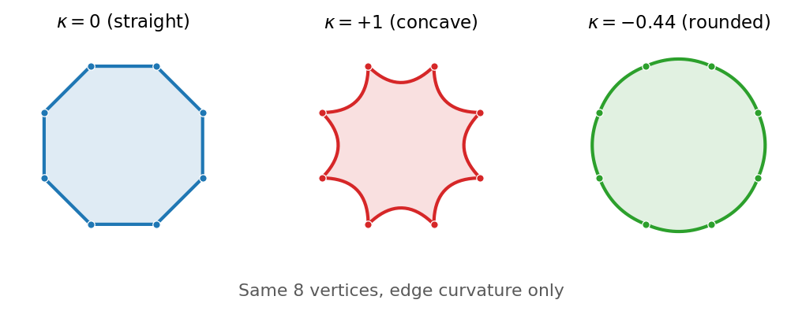
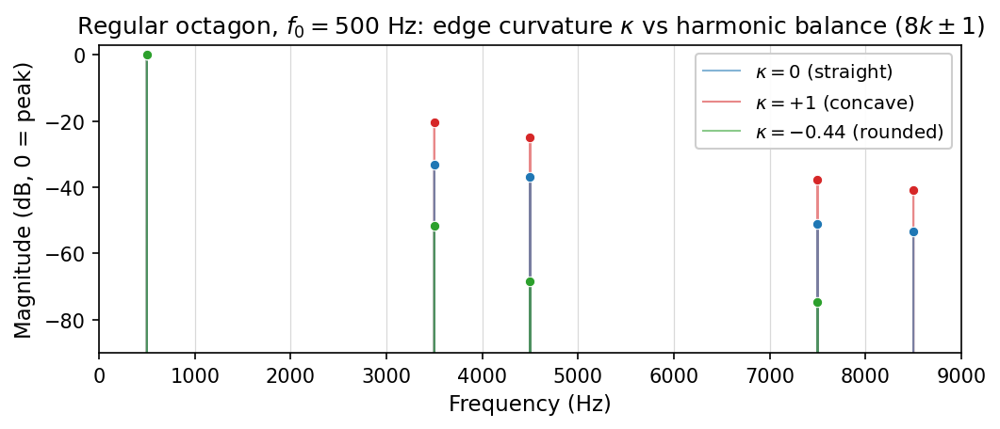
The reference regular octagon with straight edges. Harmonic energy sits at 8m ± 1 with a moderate upper-partial roll-off — the baseline against which the two curved variants are compared.
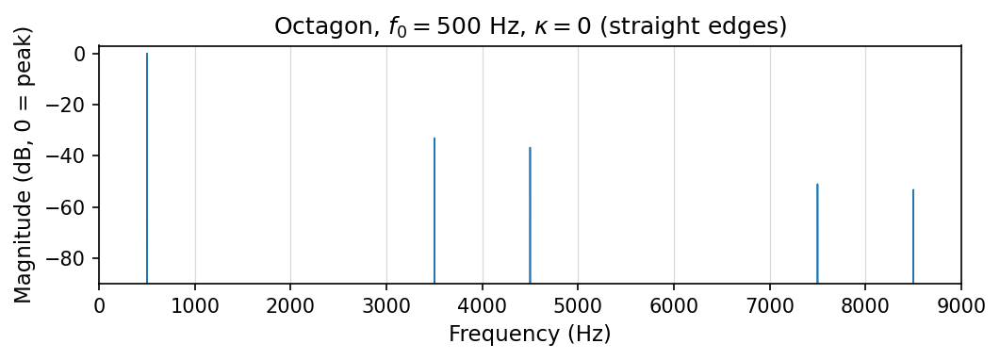
Edges bowed inward (re-entrant sides). The harmonic positions are unchanged, but the upper partials (7, 9, 15, 17) rise by roughly 12 dB relative to the fundamental, producing a brighter, sharper, more buzzing timbre.
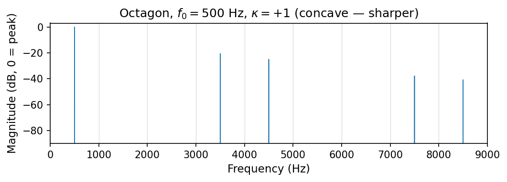
Edges bowed outward until the octagon approximates a circle. The upper partials are strongly suppressed (harmonic 17 essentially vanishes) and the tone approaches a pure sine — the rounder, more flute-like end of the curvature range.
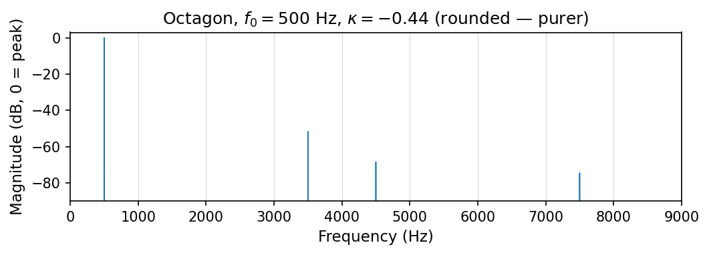
The harmonic content of a polygon waveform is governed by its symmetry order M — not by the raw vertex count N (§3.5 of the paper). All four shapes below share M = 5: harmonic energy falls exclusively on the lattice H(5) = {(5m ± 1)f0} — harmonics 1, 4, 6, 9, 11, 14, 16… — regardless of how many vertices are drawn. What changes across the four shapes is the distribution of energy within the lattice: vertex count, corner sharpness, and convexity redistribute amplitude across the active harmonics without activating any harmonic outside H(5). From darkest to brightest: Pentagon → Gear → Star 10v → Pinwheel 10v.
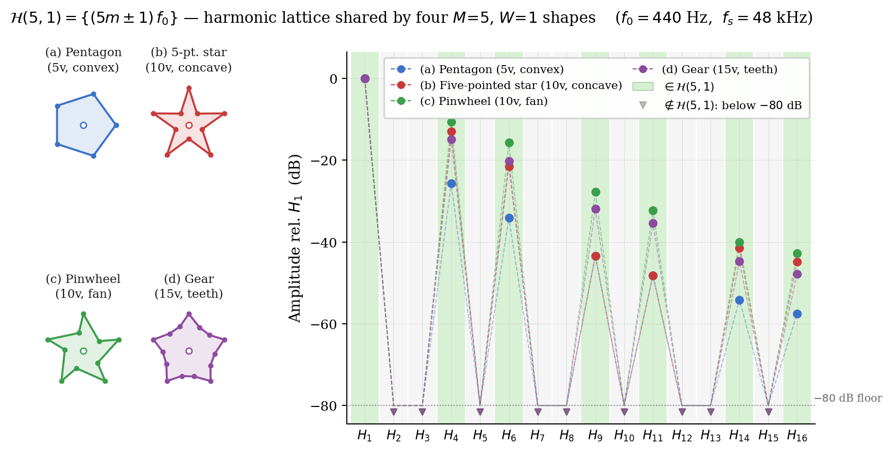
Regular convex polygon, 5 vertices. Five smooth corners, no re-entrant angles: energy within the lattice H(5) = {(5m ± 1)f0}
Five-pointed star, 10 explicit vertices (alternating convex tips and concave indentations), winding number W = 1 (simple closed curve). Despite N = 10, the 5-fold rotational symmetry gives M = 5: harmonic energy falls on the same lattice H(5) as the pentagon. The concave geometry raises the upper partials.
Fan-shaped pinwheel, 10 vertices, M = 5: same harmonic lattice H(5) as the three shapes above.
Gear-like shape, M = 5: the same harmonic lattice H(5) applies.
The 3D extension (Section 5) replaces the drawn polygon with the cross-section of a convex polyhedron sliced by a fixed horizontal plane. Rotating the solid about its axes continuously reshapes that cross-section, which is then traversed exactly as a 2D polygon. Topological transitions — where the cutting plane crosses a vertex or edge — are handled by the same sleeping-vertex mechanism (Section 5.3), keeping the output vertex count fixed so the traversal and polyBLAMP correction stay continuous. Each example sweeps a rotation angle continuously over the full duration of the audio.
Cube sliced at z = 0.5 and rotated simultaneously about the x and y axes (Fig. 5). The cross-section sweeps from a square toward a near-regular hexagon, the vertex count moving between 4 and 6 as the plane crosses the cube's edges. The harmonic content shifts continuously from the 4-fold square spectrum toward the irregular hexagon one.
The same cube rotated about a single axis through the full 0°–90° range. The cross-section evolves continuously and passes through topological transitions where the cutting plane crosses the cube's vertices and edges (Section 5.3) — each heard as a point of articulation within an otherwise smooth timbral sweep, with the harmonic complexity growing and receding.
A square pyramid sliced at z = 0.5 and rotated about the x axis from 0° to 90° (Section 5.4). As the apex enters the cross-section the shape passes through irregular quadrilaterals and the vertex count reduces from 4 to 3, producing a continuous shift from a square-like to a triangular harmonic spectrum.